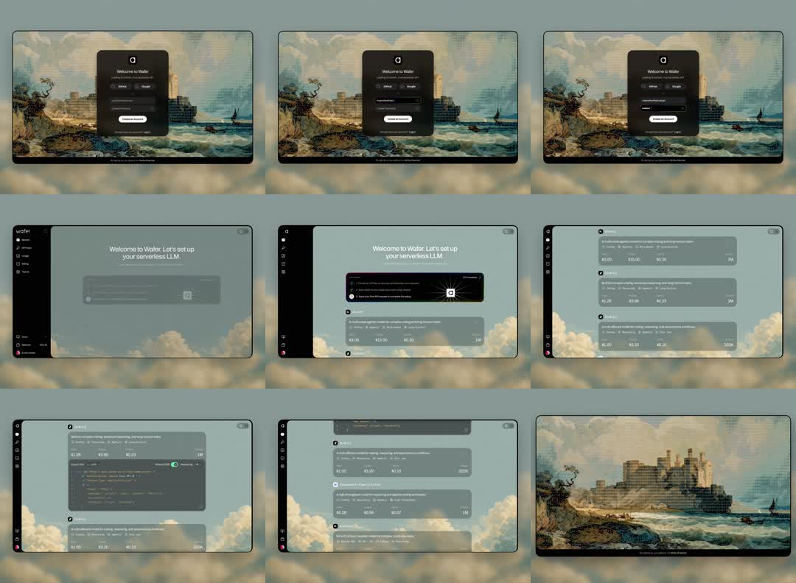

Full marketing-to-product walkthrough for 'Wafer' (serverless LLM): dithered vintage seascape painting backdrop, centered dark auth card (GitHub/Google/email), then onboarding ('Let's set up your serverless LLM') with model/plan pricing rows, API-key step with code block, scrolling into the dashboard.
Media
Frame-by-frame

0-12%
Browser chrome framing; login card over a heavily dithered classical seascape painting; email input + GitHub/Google SSO buttons; 'Create an account' primary button.
12-20%
Email typed, password dots, button hover; transition into app.
20-35%
App shell fades in: left icon rail (wafer logo, Home, API keys, Billing, Usage, Docs, Team), centered welcome 'Welcome to Wafer. Let's set up your serverless LLM.' with step content below.
35-55%
Onboarding steps stack: choose a model (dark card with radio + sparkle), then plan rows showing prices ($3.00/$15.00/$0.30...); rows appear with subtle rise+fade as the page scrolls.
55-75%
API key creation step: dark code block with syntax-highlighted curl/JS snippet, 'Create key' toggle switches on with a green flip.
75-90%
More plan tiers scroll past (prices per 1M tokens); a modal 'Unlimited?...' briefly appears top.
90-100%
Transition back out to the pure dithered seascape; loop.
Build prompt
Rebuild this flow 1:1: a marketing-to-product journey for "Wafer" (serverless LLM hosting). Four screens: a cinematic auth screen over a dithered classical seascape, an app shell with icon rail, an onboarding flow (model picker, plan pricing rows, API-key step), and a dashboard glimpse - then it loops back out to the artwork.
## Integration
Integration: stack-agnostic spec - every value is plain CSS/layout/typography; reveals are described as durations + cubic-bezier curves that map to any animation library or CSS transitions.
## Screen 1 - Auth
Backdrop: classical seascape painting converted to heavy 1-bit dither, full-bleed. Center: dark auth card - email input, GitHub and Google SSO buttons, "Create an account" primary button. Browser-chrome framing around the scene.
## Screen 2 - App shell
Left icon rail (wafer logo, Home, API keys, Billing, Usage, Docs, Team) over a dark app surface; centered welcome: "Welcome to Wafer. Let's set up your serverless LLM."
## Screen 3 - Onboarding
Stacked steps: model picker (dark card, radio + sparkle icon); plan rows with prices per 1M tokens ($3.00 / $15.00 / $0.30...) in mono tabular figures; API-key step - dark code block with syntax-highlighted curl/JS snippet and a "Create key" toggle that flips green when on.
## Screen 4 - Dashboard + exit
More plan tiers scroll past; a brief "Unlimited?..." modal appears at the top; then the journey reverses out to the pure dithered seascape and restarts.
## Transitions
- Auth -> app shell: card crossfades into the shell, 400ms.
- Section reveals within onboarding: opacity 0 -> 1, y 16 -> 0, 500ms cubic-bezier(0.22, 1, 0.36, 1), fired as each section enters view.
- Pricing rows stagger ~80ms, laid down by the scroll.
- Toggle flip: green fill, 200ms.
- Exit: crossfade to the artwork alone, 400ms.
## Calibration
- Reveals are generous but restrained: 500ms, 16px of rise, no scale, no bounce.
- The dither texture is static throughout - the art is the constant, the UI moves.
- The full walkthrough runs ~39s at demo pace.
## Reduced motion
All reveals become opacity-only, 150ms, no rise; sections render immediately.
## Don't miss
- The dithered painting frames both ends of the journey; never cover it edge-to-edge with UI.
- The icon rail appears with the app shell and stays - it anchors every product screen.
- Plan rows are quiet lists in mono, not cards-in-cards; the toggle's green flip is the only saturated moment in onboarding.